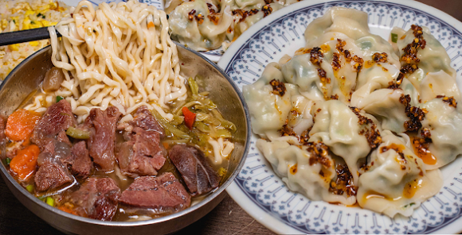

綜合類
王式魚皮
營業時間：04:00-14:00公 休 日：X
電 話：(06)228-8095
地 址：708台南市安平區安平路612號
👉煎魚肚$90-煎的酥酥脆脆卻不過老
👉魚皮湯$65-魚肉軟嫩新鮮無腥味，湯頭也鮮美好喝，雖名為魚皮，但魚肉也是有點厚度
👉肉燥飯$20-帶皮的半肥肉，醬汁鹹甜鹹甜很下飯
👉肉汁油條$20-淋上滷肉汁後的油條鹹香酥脆
👉鹹粥$65-料滿到看不到飯，放了清魚柳／蚵仔／炸魚塊~cp值很高
👉魚皮湯$65-魚肉軟嫩新鮮無腥味，湯頭也鮮美好喝，雖名為魚皮，但魚肉也是有點厚度
👉肉燥飯$20-帶皮的半肥肉，醬汁鹹甜鹹甜很下飯
👉肉汁油條$20-淋上滷肉汁後的油條鹹香酥脆
👉鹹粥$65-料滿到看不到飯，放了清魚柳／蚵仔／炸魚塊~cp值很高
不管是早餐時間還是午餐時間都滿滿人的王氏魚皮！
在地人跟觀光客都非常喜愛的名店
店面很大，門口分為外帶和內甪兩區，不要傻傻排錯~
內用座位多翻桌率很快，即使真的有再排隊也不用擔心會等太久呦
在地人跟觀光客都非常喜愛的名店
店面很大，門口分為外帶和內甪兩區，不要傻傻排錯~
內用座位多翻桌率很快，即使真的有再排隊也不用擔心會等太久呦
廣仔虱目魚丸
營業時間：06:00-14:30公 休 日：週四
電 話：(06)223-8531
地 址：700台南市中西區開山路58號
👉肉酥飯$20-也就是肉燥飯在撒上一些肉鬆，很搭！
👉魚皮湯 有漿(像魚丸)$35 沒漿(純魚肉)$45-喜歡沒漿的，廣仔也是目前看下來最便宜的，料也不會比別人少
👉煎魚肚$90-雖然沒王式的彭派，但在市區也是大份量又料好味美
👉辣味小黃瓜$35-超級沒賣相，紅通通的辣味小黃瓜，意外的好吃涮嘴！醃漬的夠味卻不死鹹，微微的辣不如表面可怕~很解膩
👉魚皮湯 有漿(像魚丸)$35 沒漿(純魚肉)$45-喜歡沒漿的，廣仔也是目前看下來最便宜的，料也不會比別人少
👉煎魚肚$90-雖然沒王式的彭派，但在市區也是大份量又料好味美
👉辣味小黃瓜$35-超級沒賣相，紅通通的辣味小黃瓜，意外的好吃涮嘴！醃漬的夠味卻不死鹹，微微的辣不如表面可怕~很解膩
廣仔的座位區就在騎樓延伸到了三四間店面之寬，
所有餐點都很便宜且份量中等，適合叫上4-5樣來分食~
其中也有蠻特別的虱目魚肉水餃可以點，只是波波沒特愛水餃XD(所有水餃都還好)
所有餐點都很便宜且份量中等，適合叫上4-5樣來分食~
其中也有蠻特別的虱目魚肉水餃可以點，只是波波沒特愛水餃XD(所有水餃都還好)
永記虱目魚丸
營業時間：06:30-13:30公 休 日：X
電 話：(06)222-3325
地 址：700台南市中西區開山路82之1號
👉肉燥飯-醬汁很夠💯肥肉真的恰到好處的讚
👉魚皮湯 / 👉魚肚湯 / 👉總合湯
所有的湯頭底一樣 偏甜 但北部人可接受😎 都會加大段的蔥（忘記他的名字了）
魚皮魚肚的肉都偏少 感覺有裹一點點魚漿一起（就不會像生的就是魚肉 熟的就是魚漿分這麼系 綜合的感覺）
綜合湯我們選的丸子餃子吃起來都差不多 個人覺得沒什麼特色
👉魚皮湯 / 👉魚肚湯 / 👉總合湯
所有的湯頭底一樣 偏甜 但北部人可接受😎 都會加大段的蔥（忘記他的名字了）
魚皮魚肚的肉都偏少 感覺有裹一點點魚漿一起（就不會像生的就是魚肉 熟的就是魚漿分這麼系 綜合的感覺）
綜合湯我們選的丸子餃子吃起來都差不多 個人覺得沒什麼特色
2/17還18才重新裝潢開幕
整個店面明亮乾淨 白色色調讓人心情愉悅舒適！冷氣也很強
非常推薦想吃台南小吃卻也注重氛圍的人！
不過光論食物好吃度 個人還是有更愛的（魚皮就是要有滿滿的真的魚肉啊🥺）
2021.02.27
整個店面明亮乾淨 白色色調讓人心情愉悅舒適！冷氣也很強
非常推薦想吃台南小吃卻也注重氛圍的人！
不過光論食物好吃度 個人還是有更愛的（魚皮就是要有滿滿的真的魚肉啊🥺）
2021.02.27
唐家泡菜館
營業時間：11:00-14:00 / 16:30-20:00公 休 日：週日
電 話：(06)276-3263
地 址：701台南市東區裕農路18號
👉招牌泡菜三鮮炒飯$95
加入蝦子、花枝、肉絲與招牌泡菜一起炒，每顆飯粒都吸附著精華，色澤誘人炒的香氣也撲鼻，可謂色香味俱全！
👉泡菜烏龍麵$70
酸酸辣辣的開胃泡菜湯頭很適合微冷的天氣吃！會吸附湯汁的意麵也是很多人的選擇，烏龍麵則可以吃到Q談有嚼勁的口感~
加入蝦子、花枝、肉絲與招牌泡菜一起炒，每顆飯粒都吸附著精華，色澤誘人炒的香氣也撲鼻，可謂色香味俱全！
👉泡菜烏龍麵$70
酸酸辣辣的開胃泡菜湯頭很適合微冷的天氣吃！會吸附湯汁的意麵也是很多人的選擇，烏龍麵則可以吃到Q談有嚼勁的口感~
位在東區裕農路上的泡菜名店，快到用餐時間的店家騎樓就可看見一輛輛機車停靠，
每天內用外帶的人都絡繹不絕，晚點來就要排隊！
外帶建議可以先打電話去訂餐呦~

公 休 日：週五
電 話：(06)275-9489
地 址：701台南市東區東寧路134巷4-4號
香香小吃
營業時間：11:20-14:30 / 16:30-21:00公 休 日：週五
電 話：(06)275-9489
地 址：701台南市東區東寧路134巷4-4號
👉牛肉拉麵小$80大$85 -從來沒看過有人牛肉麵不到100塊的啦，雖然便宜但肉的份量也毫不遜色，湯頭味道也很剛好不會過油
👉燙青菜$20-滿滿一大盤只要20塊！通常會混雜著兩種青菜，CP值超高的~
👉滷味-門口有擺著一大盆的滷味，看到還有甚麼都可以點，也可以跟店員說要20塊隨邊切的滷味(通常也是滿滿一大盤呦~)
👉燙青菜$20-滿滿一大盤只要20塊！通常會混雜著兩種青菜，CP值超高的~
👉滷味-門口有擺著一大盆的滷味，看到還有甚麼都可以點，也可以跟店員說要20塊隨邊切的滷味(通常也是滿滿一大盤呦~)
位在成大與長榮中學中間的小巷子裡，晚餐時刻總是充滿了學生族群的身影，
波波最常買的其實就是牛肉麵跟燙青菜！
香香的燙青菜比台北便宜一倍份量卻多一倍，外食比較少攝取到的青菜量全都靠香香來彌補~
波波最常買的其實就是牛肉麵跟燙青菜！
香香的燙青菜比台北便宜一倍份量卻多一倍，外食比較少攝取到的青菜量全都靠香香來彌補~
飽芝林關東煮
營業時間：11:00-23:00公 休 日：X
電 話：(06)236-2339
地 址：701台南市東區東安路116號
👉燻鴨肉飯小$40 大$50
鴨肉飯會淋上下飯的油蔥跟獨家醬料，乾的燻鴨麵食也一樣好吃~
👉炸甜不辣$25
波波敢說，炸甜不辣絕對是飽芝林的本體，來這裡沒點一定是門外漢！炸得如此酥脆卻不油，內裡甜不辣也依然濕軟，在外面真的找不到比飽芝林好吃的甜不辣
鴨肉飯會淋上下飯的油蔥跟獨家醬料，乾的燻鴨麵食也一樣好吃~
👉炸甜不辣$25
波波敢說，炸甜不辣絕對是飽芝林的本體，來這裡沒點一定是門外漢！炸得如此酥脆卻不油，內裡甜不辣也依然濕軟，在外面真的找不到比飽芝林好吃的甜不辣
飽芝林也有很多關東煮滷味可以選擇，還可以免費喝柴魚高湯~
內用的座位全部都在半開放式的騎樓，
附近比較難停機車，波波外帶都會偷偷暫停在黃線紅線視線看得到的地方XD
內用的座位全部都在半開放式的騎樓，
附近比較難停機車，波波外帶都會偷偷暫停在黃線紅線視線看得到的地方XD